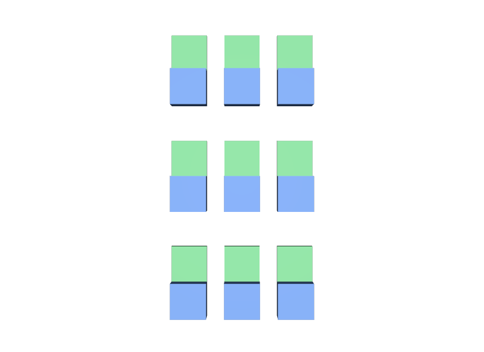

外側にだけ instanceable を書く
内側の椅子が共有されないので、列のPrototypeの中に椅子の中身がそのまま入ります。両方に書きます。
STEP 102 · INSTANCING
Instanceの中に、さらにInstanceを入れます
今日これだけ
公式情報に基づく説明
STEP 101 Scenegraph Instancingで作ったInstanceを含むPrimを、さらにinstanceable = trueにできます。これをNested Instancingと呼びます。外側のPrototypeの中に内側のInstanceが入るため、共有が二段になります。たとえば「椅子3脚が並んだ列」を作り、その列を何列も並べる場合、Stageが持つ中身は椅子1脚ぶんと列1つぶんだけで済みます。
USDA
def Xform "Row"
(
kind = "assembly"
)
{
def "Chair_1" (
references = @instance-chair.usda@
instanceable = true
)
{
double3 xformOp:translate = (-1.2, 0, 0)
uniform token[] xformOpOrder = ["xformOp:translate"]
}
... Chair_2、Chair_3 も同じ形 ...
}この時点で、3脚の椅子は1つのPrototypeを共有しています。Row自体はまだ普通のPrimです。
USDA
def Xform "World"
{
def "Row_1" (
references = @nested-row.usda@
instanceable = true
)
{
double3 xformOp:translate = (0, 2.4, 0)
uniform token[] xformOpOrder = ["xformOp:translate"]
}
... Row_2、Row_3 も同じ形 ...
}列を参照し、こちらにもinstanceable = trueを書きます。書き方は内側とまったく同じで、特別な指定は要りません。
結果

examples/lesson-62/nested.usda / Apple USD Tools 0.25.2 のusdrecord（Hydra Storm・Metal）/ macOS 26.5.2・Apple M4from pxr import Usd
stage = Usd.Stage.Open("nested.usda")
print(len(list(stage.Traverse()))) # 5
# /World, /World/Row_1, /World/Row_2, /World/Row_3, /World/ShotCam
for proto in stage.GetPrototypes():
print(proto.GetPath(), [c.GetName() for c in proto.GetChildren()])
# /__Prototype_1 ['Seat', 'Back'] … 椅子の中身
# /__Prototype_2 ['Chair_1', 'Chair_2', 'Chair_3'] … 列の中身Prototypeが2つできています。1つは椅子の中身、もう1つは列の中身です。列のPrototypeが持っているのは3つのInstanceだけで、椅子の中身は入っていません。共有が二段になっているのが、この出力から読み取れます。
Diagram
Python
from pxr import Gf, Usd, UsdGeom
# 内側 — 椅子を3脚並べた列
row = Usd.Stage.CreateNew("nested-row.usda")
r = UsdGeom.Xform.Define(row, "/Row")
row.SetDefaultPrim(r.GetPrim())
for i, x in enumerate((-1.2, 0, 1.2)):
prim = row.DefinePrim("/Row/Chair_%d" % (i + 1))
prim.GetReferences().AddReference("instance-chair.usda")
prim.SetInstanceable(True)
UsdGeom.Xformable(prim).AddTranslateOp().Set(Gf.Vec3d(x, 0, 0))
row.Save()
# 外側 — その列を3つ並べる
scene = Usd.Stage.CreateNew("nested.usda")
UsdGeom.Xform.Define(scene, "/World")
for i, y in enumerate((2.4, 0, -2.4)):
prim = scene.DefinePrim("/World/Row_%d" % (i + 1))
prim.GetReferences().AddReference("nested-row.usda")
prim.SetInstanceable(True)
UsdGeom.Xformable(prim).AddTranslateOp().Set(Gf.Vec3d(0, y, 0))
scene.Save()作り方は内側も外側もまったく同じです。「参照して、SetInstanceable(True)して、置く」を繰り返すだけで、共有は自動的に階層になります。
USDA → Python mapping
USDA
内側の instanceable = true↓Python
chair.SetInstanceable(True)USDA
外側の instanceable = true↓Python
row.SetInstanceable(True)USDA
（Prototypeの一覧）↓Python
stage.GetPrototypes()Beginner notes
よくある間違い
内側の椅子が共有されないので、列のPrototypeの中に椅子の中身がそのまま入ります。両方に書きます。
合成結果が変わるたびにPrototypeが増えます。差を付けるなら、STEP 103 Instance Refinementのとおり種類を絞ります。
入るのはInstanceだけです。形の実体は椅子のPrototypeに一つあるだけです。
二段目の内側も同じくInstance Proxyで、書き込めません。
Glossary
Official references
確認日: